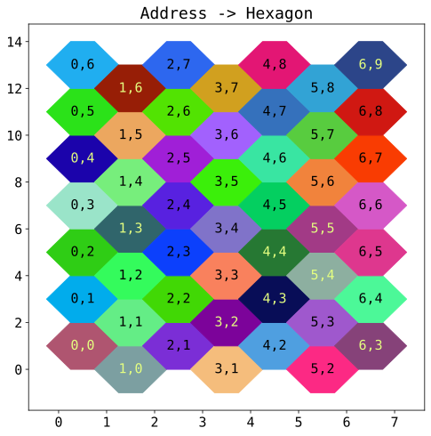

Hexagonal grids - coordinates and addresses¶
This notebook goes through creating an addressing system for a hexagonal grid, so that each hexagon can be referred to, and how to convert that to an from a rendering coordinate system, so that a game grid could be rendered, and user clicks somewhere on the grid can be converted back.
Definitions¶
Define a tessellating hexagonal grid as a set of hexagons \(\mathcal{H}\) which covers the cartesian plane \(\mathbb{R}^2\). Each hexagon \(h_{i,j} \in \mathcal{H}\) has an integer address \(\{i, j\} \in \mathbb{Z}^2\). The hexagons do not overlap so the intersection of any two distinct \(h\) is empty, and the cartesian space is covered such that any coordinate \(\{x, y\} \in \mathbb{R}^2\) belongs to some \(h_{i,j}\).
We can therefore define the grid with a function \(f : \mathbb{R}^2 \rightarrow \mathbb{Z}^2\) that maps coordinates in cartesian space to the corresponding hexagon address. This function is useful for example in the context of a computer interaction where a user selects a pixel location on a rendering of the hexagonal grid, and we which to find the corresponding grid address.
Without loss of generality, assume that the hex grid is “flat topped” as defined in 1, and the hexagonal grid addresses are “Axial Coordinates” as defined in 1.
Hexagon geometry¶
We need to determine the shape of each hexagon. Clearly the tessellation will be straightforward so long as each hexagon on the grid is identical - but they do not need to be regular, as any simple scaling of the coordinates could easily be inverted to get regular hexagons if that was so desired. A regular hexagon with side 1 has a height of \(\sqrt{3}\) so it is in fact more convenient to choose a non-regular geometry.
Define the hexagon shape so that the distances between hexagons are small whole numbers: a small section of the tessellation is shown below - the vertical space between adjacent hexagons in the same “column” (labelled \(h\)) is 2, and the vertical space relative to the hexagon in the next column is 1. The horizontal space (\(w\)) is 1.
import numpy as np
def hex_points():
return np.array([
[1.25, 1.],
[0.75, 2.],
[0.25, 2.],
[-0.25, 1.],
[0.25, 0.],
[0.75, 0.],
[1.25, 1]
])
Colouring the hexagons¶
As noted at the start, each hexagon has an address \(\{i, j\}\). In order to better understand our representations of the grid, we will pick a pseudo-random colour for each hexagon using its address and the SHA-256 hash function.
import hashlib
def color_for_hex(i, j):
"""Calculates a size 3 array of floats that can be used as a color
The input values are put into a byte string and passed to the sha256
hash function.
"""
buffer = np.array([i, j], dtype=np.int32).tobytes()
hash_data = hashlib.sha256(buffer).digest()
return np.frombuffer(hash_data, dtype=np.uint8)[:3].astype(float)/255
print(color_for_hex(1, 1))
# The function is deterministic, and only considers integer values, so this
# will print the same output
print(color_for_hex(1.1, 1))
# Another example
print(color_for_hex(23, -123))
[0.39215686 0.92941176 0.5254902 ]
[0.39215686 0.92941176 0.5254902 ]
[0.08235294 0.17254902 0.38431373]
Addressing the rectangular grid¶
The addresses for the hexagons have to components \(i\) and \(j\). The first addresses the column (so increases along the \(x\) direction). The \(j\) component increases along the \(y\) direction but is offset down by 1 for each column index to create a useful invariance: when moving in one of the six directions across the edge of one hexagon to an adjacent one, the index changes in the same way irrespective of the starting index. I.e. we can define six movement operations:
\(\uparrow(i, j) = (i, j+1)\)
\(\downarrow(i, j) = (i, j-1)\)
\(\nearrow(i, j) = (i+1, j+1)\)
\(\swarrow(i, j) = (i-1, j-1)\)
\(\nwarrow(i, j) = (i-1, j)\)
\(\searrow(i, j) = (i+1, j)\)
Given that we know how the address change across the grid, and choosing sensible starting point (e.g. that address \(\{0, 0\}\) corresponds to the origin of the cartesian plane), we can find a location for each hexagon based on its address with the following function.
def axial_to_world(i: int, j: int) -> (float, float):
x = np.float(i)
y = np.float(2*j - i)
return x, y
To see how this works, we iterate over a rectangular set of hexagon addresses, and draw a hexagon on the cartesian plane using the geometry and “random” colour scheme defined above.
Finding the hexagon address for a cartesian coordinate¶
The function axial_to_world finds the “origin” coordinates of a
hexagon, given its address - we then draw a polygon relative to this to
obtain the hexagons on the above image. The hexagon produced by this
process is effectively the preimage of the hexagon index in the funtion
\(f\) that we wish to find.
Therefore, we can start forming \(f\) by inverting the calculation
in axial_to_world. Of course the inverse is only properly defined
for coordinate pairs that sit on one of the hex origins - for other
values, perform the inverse calculation anyway and keep only the
integral part by taking the floor.
def axial_to_world_inverse(x: float, y: float) -> (int, int):
i = x
j = (y+i)/2
return map(lambda v: np.int(np.floor(v)), (i, j))
i, j = (23, 33)
x, y = axial_to_world(i, j)
print(f'axial_to_world{i, j} -> {x, y}')
x, y = (23.4, 43.1)
i, j = axial_to_world_inverse(x, y)
print(f'axial_to_world_inverse{x, y} -> {i, j}')
axial_to_world(23, 33) -> (23.0, 43.0)
axial_to_world_inverse(23.4, 43.1) -> (23, 33)
We now have a map from the real space to the hexagon coordinates, but it only finds the coordinates at the “origin” of the hexagon, and otherwise rounds down. For example, for the hexagon shown in blue below, the inverse function will identify all of the points in the pink square with the address of this hexagon.
plt.figure(figsize=(8,8))
plt.plot(*hex_points().transpose(), lw=4)
plt.fill(*np.array([[0,0],[1,0],[1,2],[0,2],[0,0]]).transpose(), color='#ffaaaa99')
None
The intersection of the pink square and blue hexagon is already correctly identified by the inverse. The four corners of the square need to be mapped to adjacent hexagons instead.
Fortunately, we can use a property of the axial address already mentioned: moving in a particular direction (across an edge to an adjacent hexagon) always changes the axial address in the same way irrespective of where the starting hexagon is - i.e. we can use the \(\nearrow\), \(\searrow\) etc operations to move to the correct address if we are in one of the corners of the pink box.
If we rescale the y axis by \(1/2\) the pink box will become a square and it is trivial to find if we are in one of the corners that lies outside the hexgon and determine the correct move operation:
def world_to_axial(x: float, y: float) -> (int, int):
i = np.int(np.floor(x))
j = np.int(np.floor((y+i)/2))
origin_x, origin_y = axial_to_world(i, j)
local_x = x - origin_x
local_y = (y - origin_y)/2
if local_x + local_y < 0.25:
return i-1, j-1
elif local_x + (1-local_y) < 0.25:
return i-1, j
elif (1-local_x) + (1-local_y) < 0.25:
return i+1, j+1
elif (1-local_x) + local_y < 0.25:
return i+1, j
else:
return i, j
To demonstrate this function, construct an image by iterating over the coordinate space and finding the axial address for each real valued location. If we color in the image according to the same colour scheme we used before, we can compare the generated image to the plot of the hexagon grid to confirm that it works.
x_values = np.linspace(-0.5,7.5,600)
y_values = np.linspace(-1.5,14.5,600)
def generate_image():
img_rgba = np.zeros((len(y_values), len(x_values), 3), dtype=np.float)
for j, y in enumerate(y_values):
for i, x in enumerate(x_values):
img_rgba[j, i, :] = color_for_hex(*world_to_axial(x,y))
return img_rgba
def image_subplot(axes):
axes.imshow(generate_image(),
origin='lower',
extent=(x_values[0], x_values[-1], y_values[0], y_values[-1]),
aspect=0.5)
axes.set_title('Coordinates -> Hexagon address')
plt.figure(figsize=(12,5.5))
image_subplot(plt.subplot(1, 2, 1))
hex_grid_subplot(plt.subplot(1, 2, 2))
References¶
There are comprehensive details on hexagonal grids here: https://www.redblobgames.com/grids/hexagons/